Overview
Description
Paint the Town is a social VR experience in which players embody a color, interact and explore their environment, and, in turn, bring it to life. Each player is assigned a color. They paint their individual color within the scene, creating different hues of that color. When players interact with the same object, their colors are mixed, bringing the scene closer to its full-colored vision. Bringing the scene into full color allows the users to explore the details of it together and have a shared experience with one another.
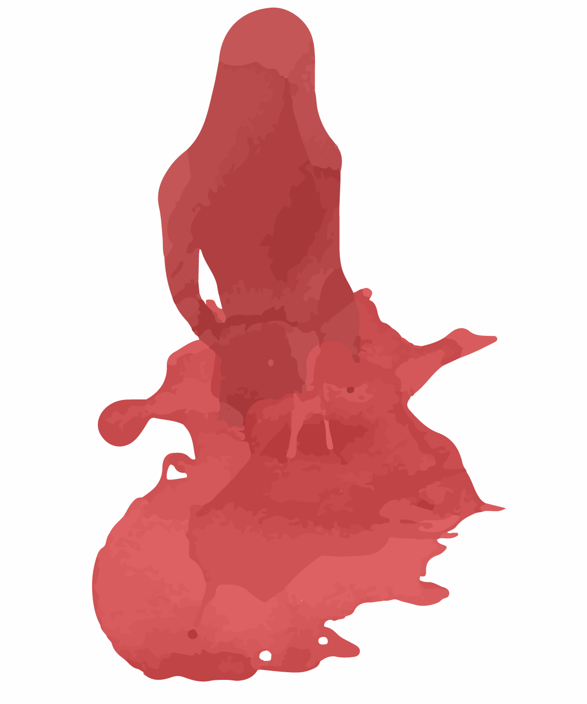
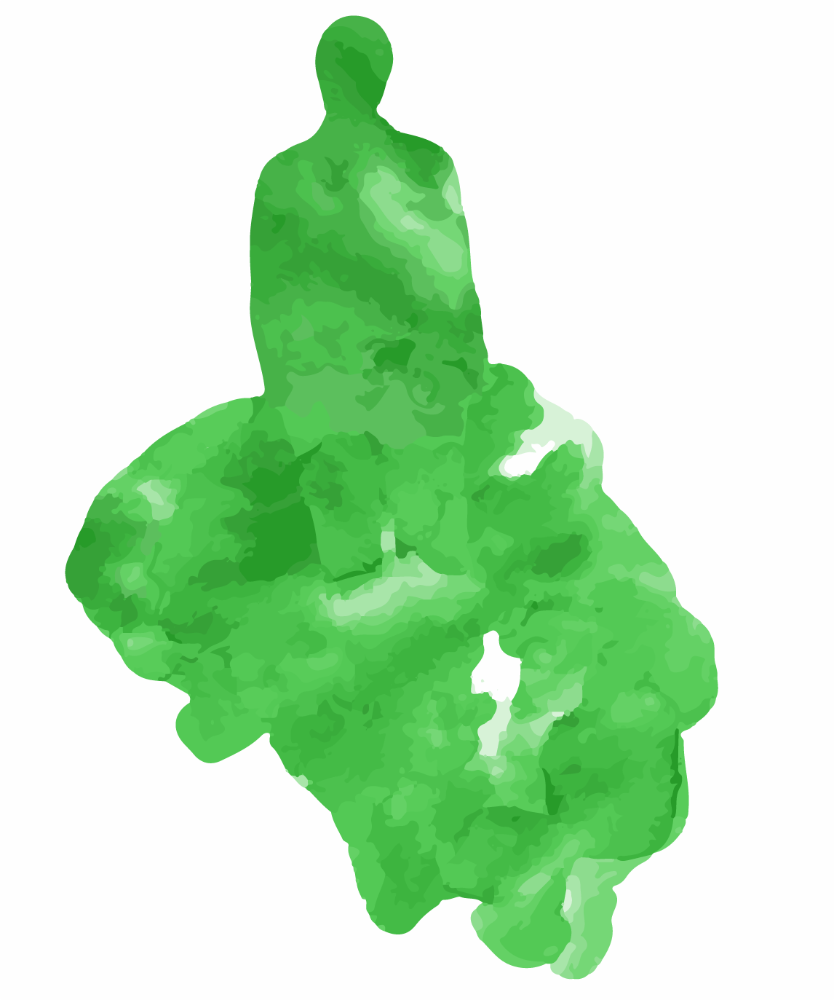
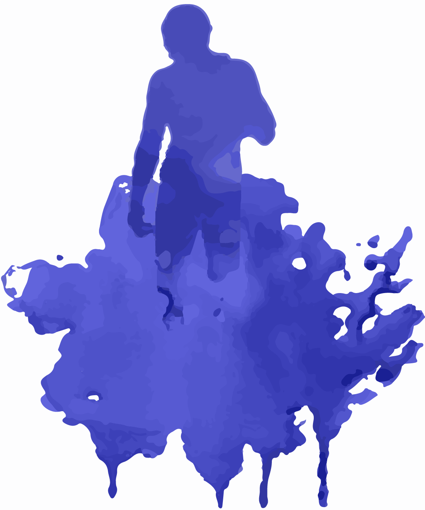
This project was started during the fall of '17. Recruitment and early development began in mid October. The project was completed early June at the Virtual Reality Club at UCSD's annual Spring Project Showcase.
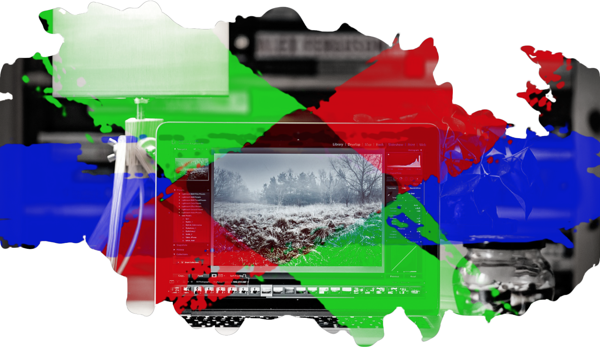
Inspiration
This project was conceived in order to provide student developers a chance to make an application designed around a sensory experience for virtual reality technology.
Goals
The final iteration of this project, for the scope of the academic year of its development, was to have a fully functioning demo to showcase an in-house shader system influenced by user interaction, a fully developed scene of 3D models and textures, sounds, as well as animations. The demo will support 3 players who will be able to see and interact with one another to develop their own experience together.
Tools
This experienced is developed in the Unity game engine. 3D modeling relied on Blender with texturing generated in Adobe Photoshop. The project is designed for use with the Oculus Rift and its Touch Controllers.
Methods / Workflow
Work was segmented into week long segments of goal setting and evaluation. We implemented an Agile workflow to achieve this. Given participants of this project were offered course credit, a minimum number of hours each week wre required. I split the meetings into two different times; full group meeting involving all members and small team meetings.
The team was broken into 3 sub teams which each were responsible for a particular, major aspect of the project.
Gameplay
In charge of our multiplayer, the gameplay team met all needs involved with creating our game experience and building the functionality to perform the experience. They were responsible for integration of the Rift and Touch controllers and creating all our interaction within the experience.
- Brian Choy
- Cassie Zhu
- Jacob Ugalde
- Nathan Mansur
Design
All 3D modeling, texturing, and enviornment design. This team relied on working within the constraints of our shader system in order to build the house and every interactable object we filled it with. Everything used within the experience was made by our team.
- Brian Thai
- Joanna Lam
- Michelle Viado
Shader
Responsible for the shader which gave our painting effect. They deployed the model I made for our shader system. Once a draft of our shader was made, it was refined to improve the effect.
- Samuel Nye
- Zhihao (Michael) Wong
I interacted with each team, providing work throughout the stages of the project. I had built the house model while the design team provided everything which would populate it, I made a model for the shader system and developed the shader to support material properties such as emissions and trasparency, and I developed the transition effects for our objects which would toggle animations, sounds, and particle effects.
Fall Progress
Demo Event
At the time of the first demo, we had not completed substantial work given we had only been developing for several weeks.
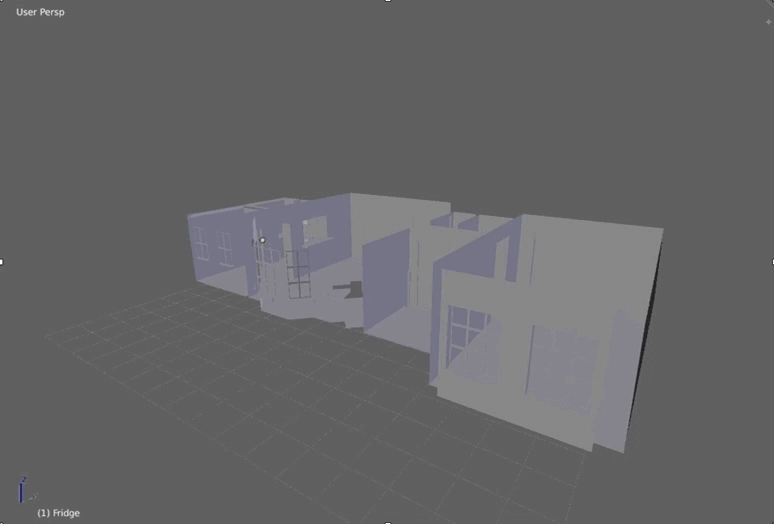


Gifs showing the deliverables from our first deadline in the fall including the layout of the house model and the shader performing on a rainbow textured cube.
We did make good progress on our shader system at the time. I had provided a model for how the shader would work. This helped the shader team deliver on a functioning demo of it which allowed us to control the rgb channels of a given texture. This was the first step needed before we could move to changing particular portions of the material.
Winter Progress
By this deadline we had a draft of the experience to demo. It included interactable objects which the user could paint throughout the house scene. The shader, however, was not working with a version of interaction which allowed the users to paint the objects. This version effected an object as a whole.
We had developed our interaction around a gesture of pointing with the index finger using the Touch controllers. I believed this would be an inuitive way for users to have a 'painting' gesture given we had tech which would allow it. We found that users struggled the idea of pointing within the experience. Oculus provides hands within the experience through their assets for Rift integration. This lead us to think perhaps the use of controllers altogether led users to have possible preconceptions of which buttons would control their main interaction; the 'triggers' as you would find on a standard console controller.
Final Submission
Mid-Quarter Progress
Halfway through our spring development, we compiled a snapshot of the progress with the goal of evaluating our timeline.
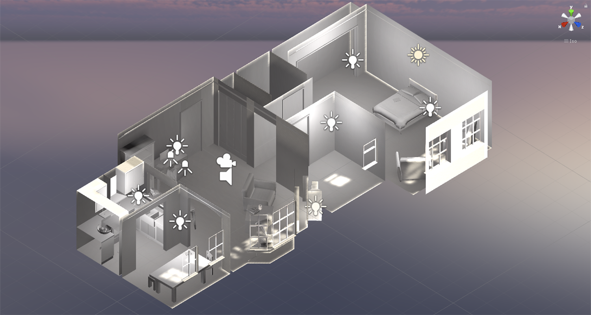
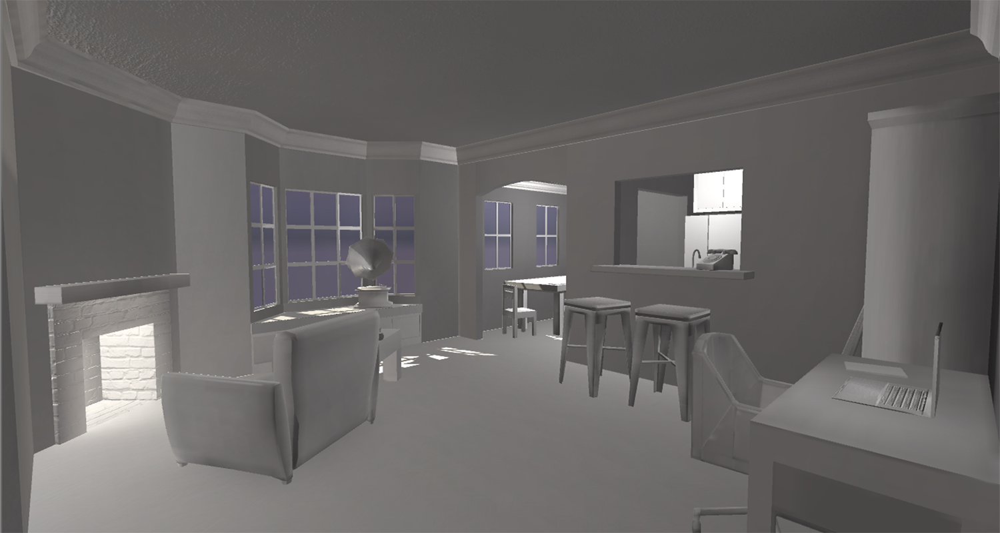
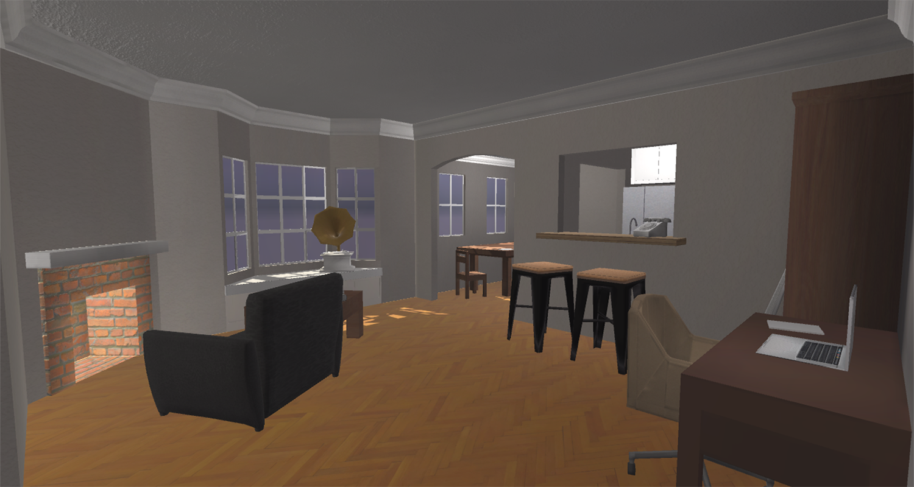
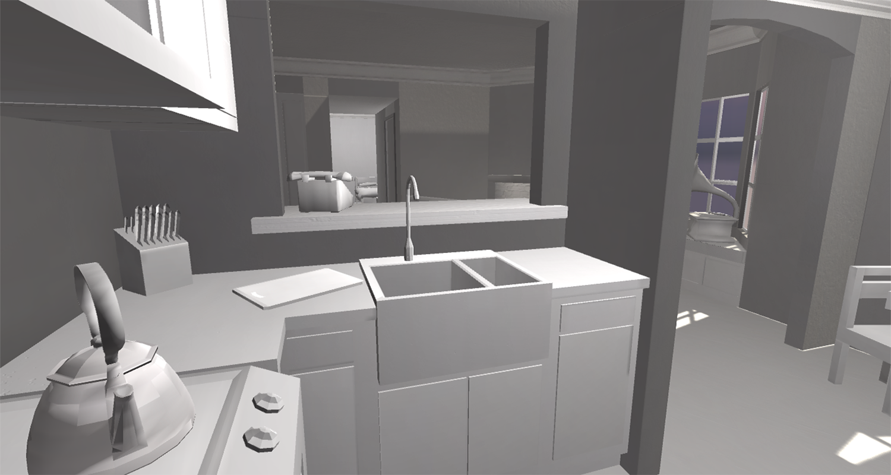
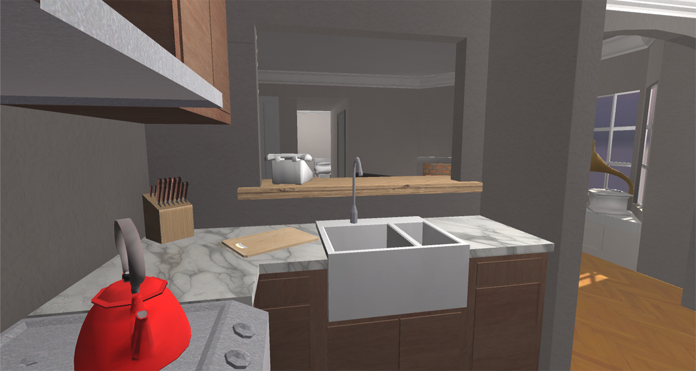
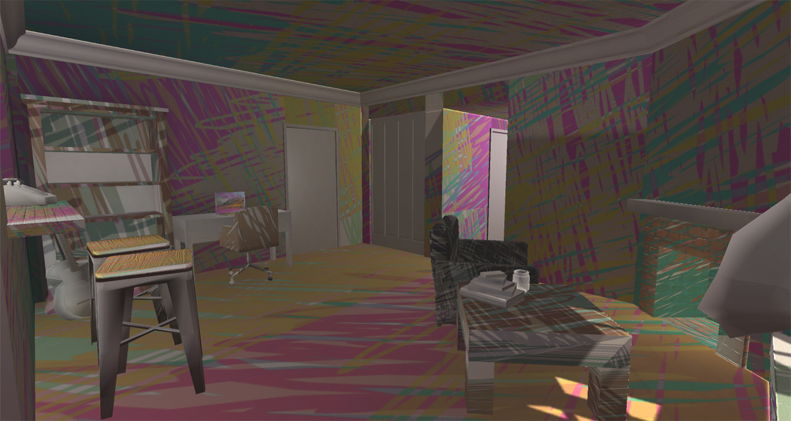
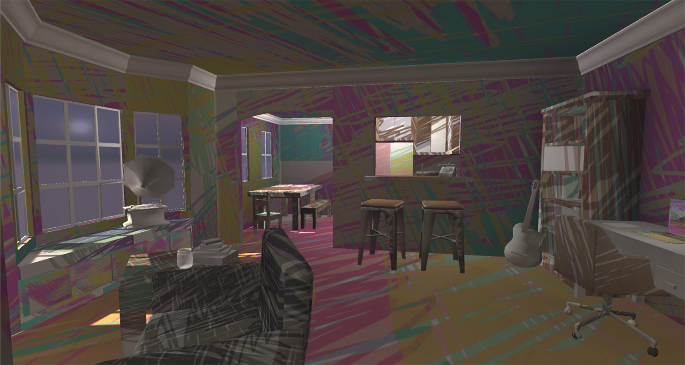
By this milestone, a lot of the house was complete with many of the smaller pieces in the process of texturing before being added to the scene. Our multiplayer was the largest, incomplete aspect which consumed most of the effort our gameplay team.
Demo Event
The demo was broken down into two mains scenes; the Lobby/Tutorial Scene and Main, House Scene.
Lobby/Tutorial
This scene was added with the intention of teaching the users the mechanics and controls for the painting that will be completed in main scene while also acting as the scene for the multiplayer networking to take place.

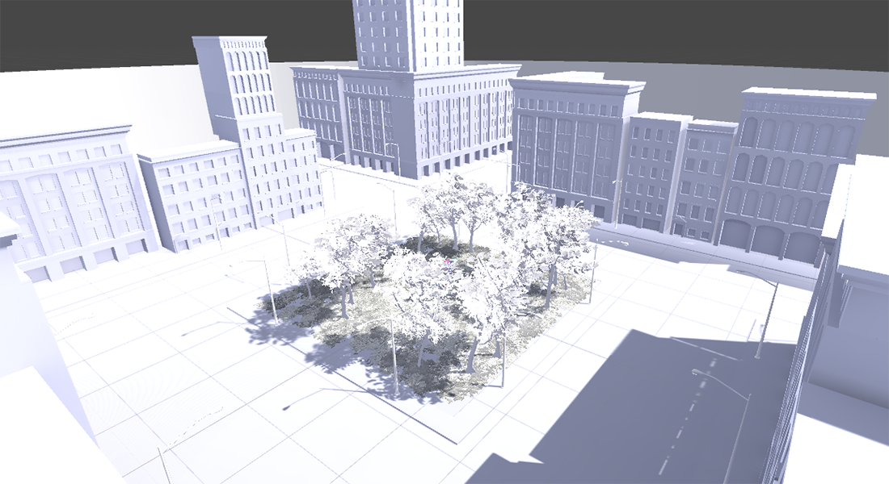
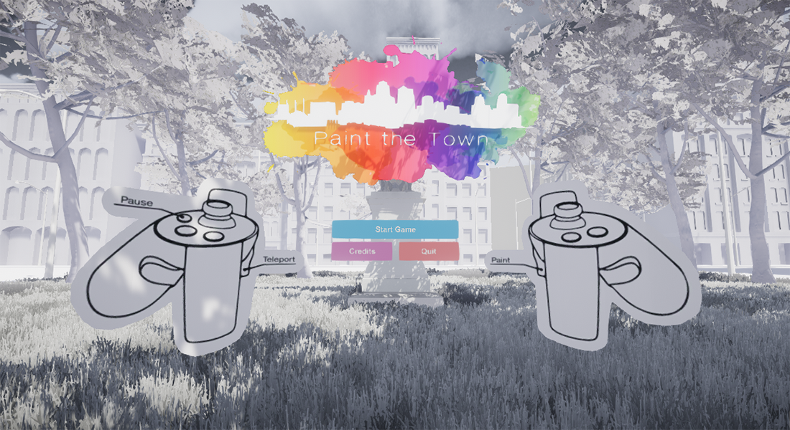
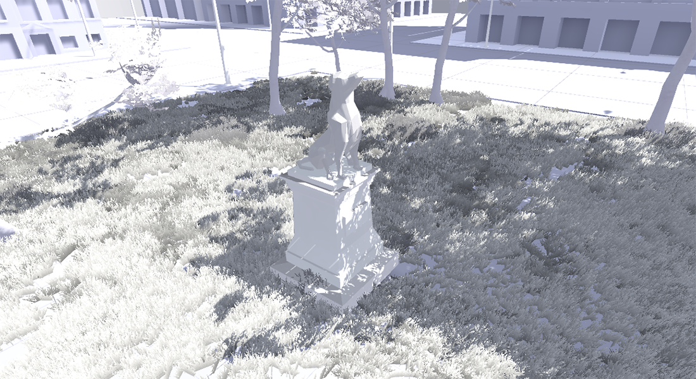

The park scene was made to feel like it was in the middle of an urban setting. This was chosen given that the title of the experience conveys a larger scope than what we chose to make for the purpose of completing in the timeline. In the middle of it is a key feature of the park, the statue. While it bears great resemblence to my dog no coincidence there, it becomes to first interactable object for the players. Upon hitting "Start Game", the players are added to the networking lobby which is the same scene though the UI and logo are removed. With all 3 players painting the object, they are then moved to the main scene, the house scene.
House Scene
The house is the scene which we had been working on since the beginning of the project. In this scene, every asset was made by our design team, with all texturing being done as well. Each player spawns into the house in a different room. From there, they carry over the painting they learned from the tutorial scene in order to interact with the space.
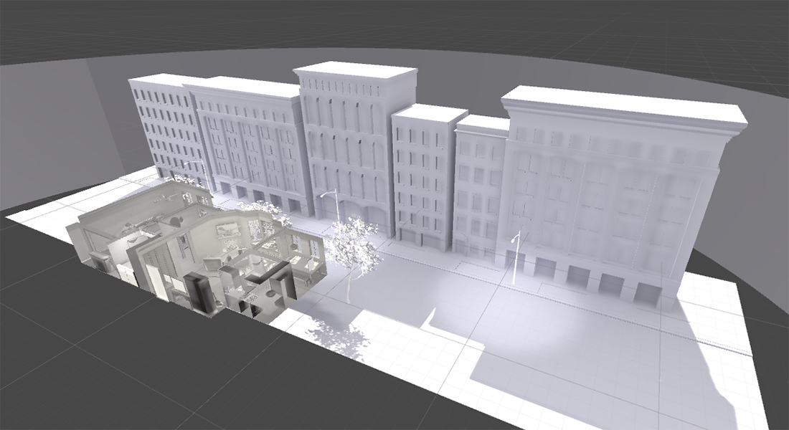
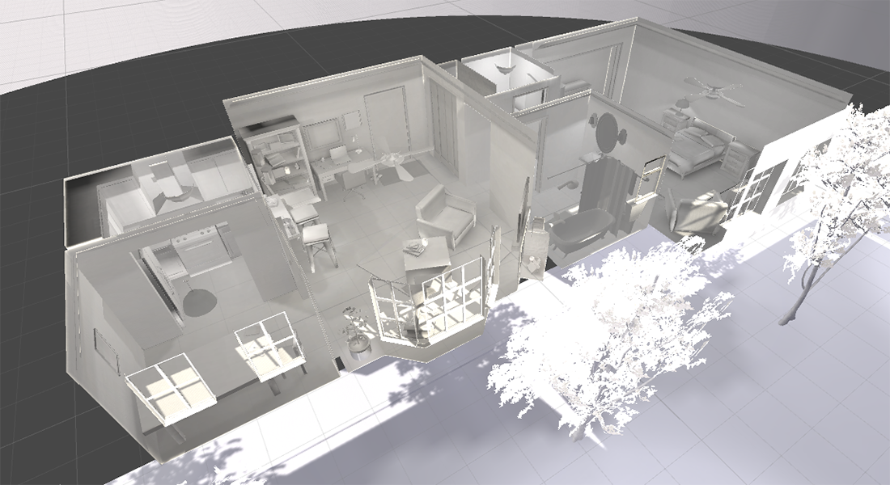
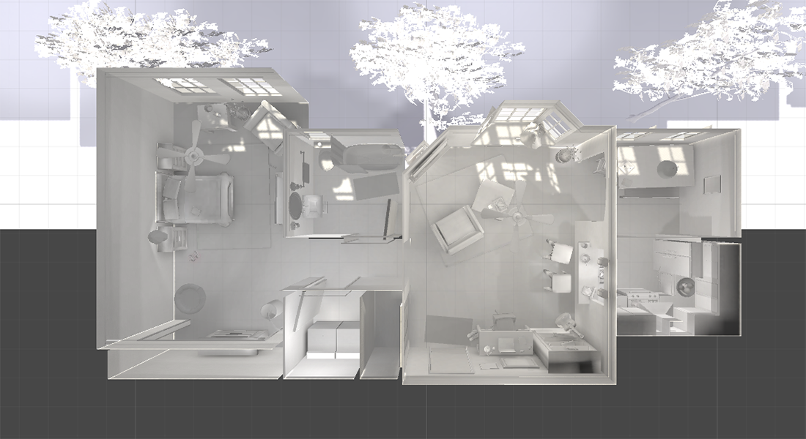


The transition for the color effect became tied into several different functionalities. We added particles, motion, and sounds which are all connected to this variable used in the shader for the color.
Critique
Overall
The final product is very close to the vision I had. The team was fantastic and very dedicated to the project, and I owe them a great amount of gratitude for it. When the project began, I aimed to create an experience that was more sensory driven. It would be a social experience where players could choose their experience based on how they want to explore the environment. After the demo event, it became obvious that were successful in meeting those parameters.
The project adopted a visual quality which was just an idea from the beginning. With all of the hard work, fine tuning, and critique given by the team, we developed this into (not trying to be overly confident) what we feel is the most aesthetically pleasing experience made within the VR Club projects.
Optimization
There were concerns in the beginning about how the painting mechanic would perform. At its current iteration, there is not a loss of performance of the experience when there are 3 players all interacting. This works while we only rely on the 2D texturing painting. Ideally, we would move into a 3D painting, allowing us to do more complex painting effects and transitions. However, this would cause a reduction of performance.
One area of optimization that could be easily implemented in within the model of the shader. Currently the shader takes in 3 separate black images which we called the alpha images. Each one becomes used in the calculation for where to display the color on a texture. As the players paint, they are actually turning black portions of these images white, the areas that correspond to the location on the image texture. This could be optimized given we could do without 3 separate images, but use the RGB channels of a single alpha image.
My Growth
I learned a lot of leading a long term project throughout this experience. From the beginning, I used the experience of having been apart of a project like this the year before. I knew that, as a lead for this team, I wanted to make I provided clear instructions and goals in a concise means.
Several of the methods I employed to acheive this were:
- Spreadsheets of attendance
- Providing clear goals for the roles of the team
- Laying out quarterly goals
- Full team meetings for between-subteam communication
- Individual weekly goals for members
- Learning methods used by subteams for clear communication
- Members did an end-of-quarter journals
This project was my proudest accomplishment as a lead in any environment. I pulled from many of the experiences I previously had in order make this project successful.